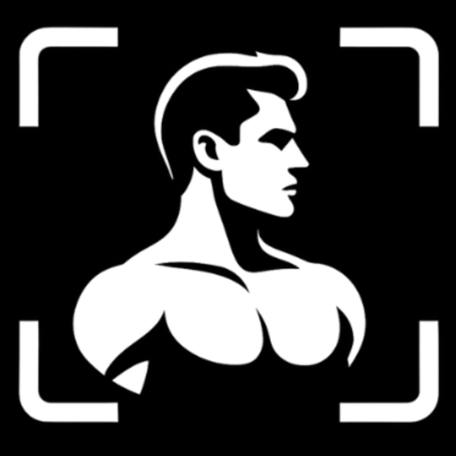

HORMOSDernière mise à jour : novembre 2026
HormOS collecte les données suivantes : identifiants de connexion (email), informations de profil (sexe, âge, taille, poids, objectif alimentaire, régime, allergènes), votre journal alimentaire et vos pesées, et, si vous connectez Apple Santé, vos pas quotidiens et vos heures de coucher et de lever. Les produits que vous scannez sont mémorisés sur votre appareil uniquement. Hors de l'espace accompagné, aucune photo n'est collectée. Dans l'espace accompagné, vos matins, vos repas et leurs photos, votre ville et vos horaires de séance, ainsi que votre dossier de départ (les réponses du questionnaire, dont un traitement ou un suivi médical, vos photos de départ et votre prise de sang) sont enregistrés pour votre accompagnement ; photos et fichiers ne sont visibles que par vous et par Thomas. Ce que vous publiez dans L'Agora, l'espace de groupe (votre prénom, vos messages, vos photos et vos messages vocaux), est visible par tous ses membres et par les coachs.
Vos données sont utilisées exclusivement pour : afficher la fiche et le score des produits que vous scannez, tenir votre journal, calculer vos cibles et vous proposer des suggestions. Nous ne vendons jamais vos données à des tiers.
Les informations produit proviennent de bases de données publiques (Open Food Facts, sous licence ODbL, et USDA FoodData Central), consultées via nos serveurs. Si vous dictez un repas, l'audio est transcrit par un prestataire (Groq) et n'est pas conservé. Dans l'espace accompagné, la photo d'un repas est analysée par un prestataire (Anthropic) pour proposer les aliments qu'on y reconnaît.
Les données de compte sont stockées sur des serveurs sécurisés via Supabase (infrastructure AWS, Union européenne), chiffrées en transit, avec un accès restreint par authentification et des règles de sécurité au niveau des lignes (RLS) : seul l'utilisateur authentifié accède à ses propres données. Les achats sont gérés par RevenueCat avec un identifiant anonyme. Avec votre consentement, une mesure d'audience anonyme (Mixpanel) et des rapports d'erreur (Sentry) nous aident à améliorer l'application.
Conformément au RGPD, vous disposez des droits suivants : accès à vos données personnelles, rectification de vos informations, suppression complète de votre compte et de toutes vos données (Réglages > Supprimer mon compte), portabilité de vos données, et opposition au traitement. La suppression de compte entraîne la suppression irréversible de votre profil, de votre journal, de vos pesées et de vos préférences.
Pour toute question relative à vos données personnelles ou pour exercer vos droits, contactez-nous à : privacy@phyziq.app
Si tu t'inscris à la liste d'attente sur ce site, ton email sert uniquement à te prévenir de la sortie de HormOS. Il n'est jamais revendu ni partagé. Il est effacé au plus tard six mois après la sortie de l'app. Pour éviter les abus, une empreinte de ton adresse IP (jamais l'adresse elle-même) est gardée une heure au plus. Pour être retiré de la liste, écris à privacy@phyziq.app.
Last updated: November 2026
HormOS collects the following data: login credentials (email), profile information (sex, age, height, weight, dietary goal, diet, allergens), your food journal and weigh-ins, and, if you connect Apple Health, your daily steps and your bedtime and wake-up times. The products you scan are stored on your device only. Outside the coaching space, no photos are collected. In the coaching space, your mornings, your meals and their photos, your city and your session times, as well as your starting file (your questionnaire answers, including any treatment or medical follow-up, your starting photos and your blood test) are recorded for your coaching; photos and files are visible only to you and to Thomas. What you post in L'Agora, the group space (your first name, your messages, your photos and your voice messages), is visible to all its members and to the coaches.
Your data is used exclusively to: show the card and score of the products you scan, keep your journal, compute your targets and offer suggestions. We never sell your data to third parties.
Product information comes from public databases (Open Food Facts, under the ODbL license, and USDA FoodData Central), queried through our servers. If you dictate a meal, the audio is transcribed by a provider (Groq) and is not retained. In the coaching space, a meal photo is analyzed by a provider (Anthropic) to suggest the foods it recognizes.
Account data is stored on secure servers via Supabase (AWS infrastructure, European Union), encrypted in transit, with access restricted by authentication and row-level security (RLS): only the authenticated user can access their own data. Purchases are handled by RevenueCat with an anonymous identifier. With your consent, anonymous usage analytics (Mixpanel) and crash reports (Sentry) help us improve the app.
Under the GDPR you have the following rights: access to your personal data, rectification, full deletion of your account and all your data (Settings > Delete my account), data portability, and objection to processing. Deleting your account irreversibly deletes your profile, journal, weigh-ins and preferences.
For any questions regarding your personal data or to exercise your rights, contact us at: privacy@phyziq.app
If you join the waitlist on this website, your email is only used to tell you when HormOS is released. It is never sold or shared. It is deleted at the latest six months after the app is released. To prevent abuse, a fingerprint of your IP address (never the address itself) is kept for one hour at most. To be removed from the list, write to privacy@phyziq.app.